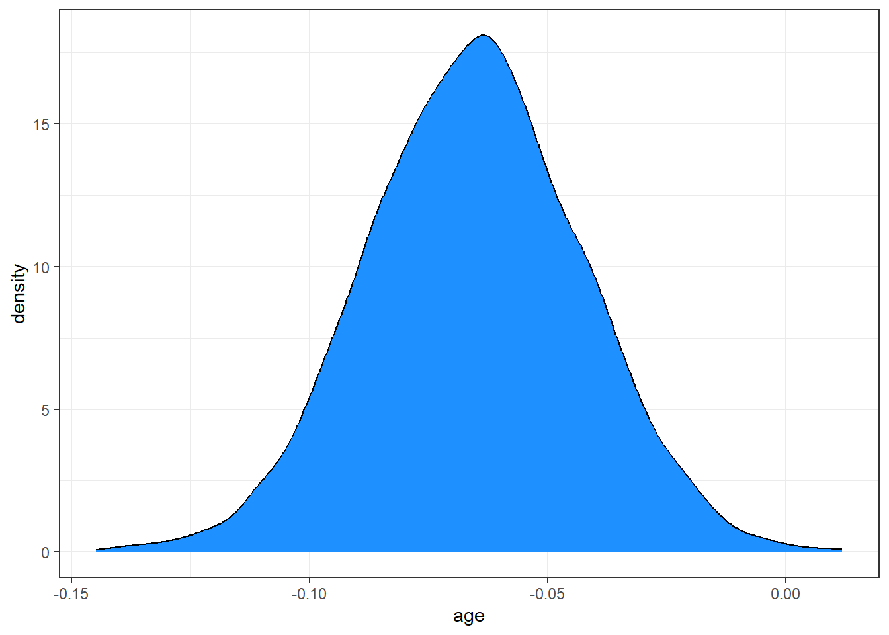
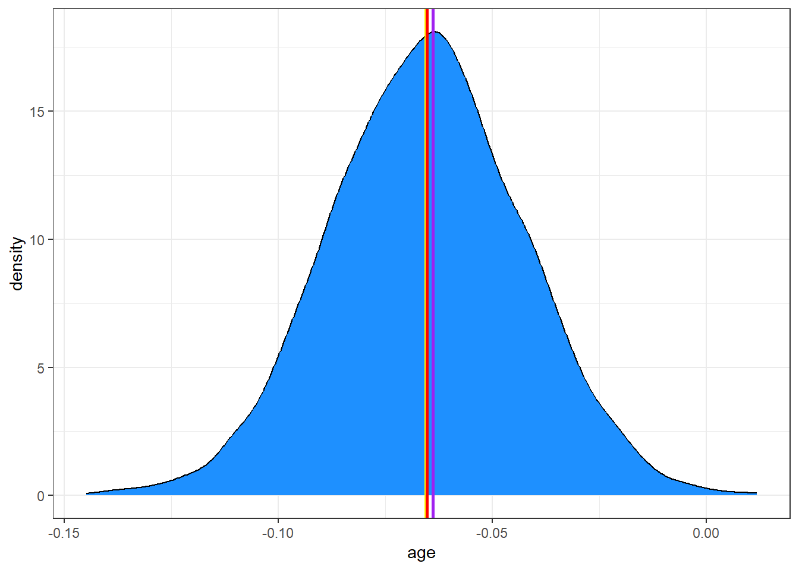
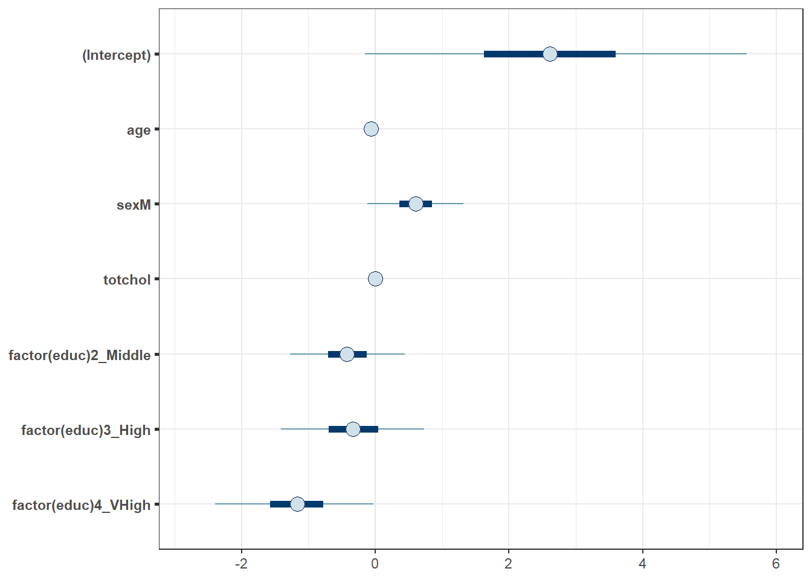
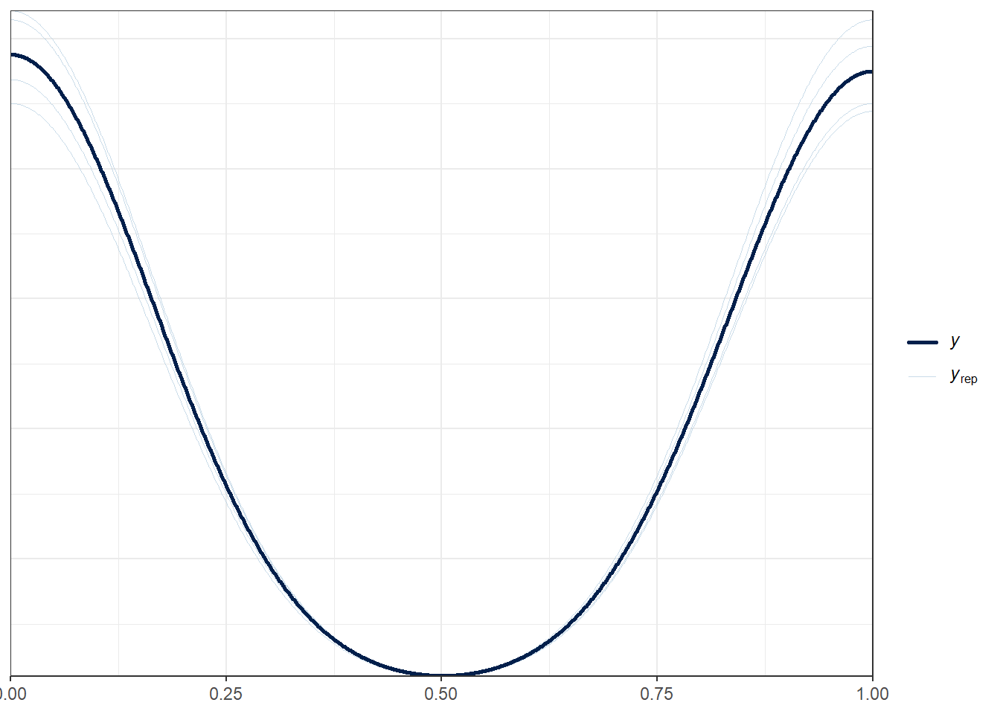
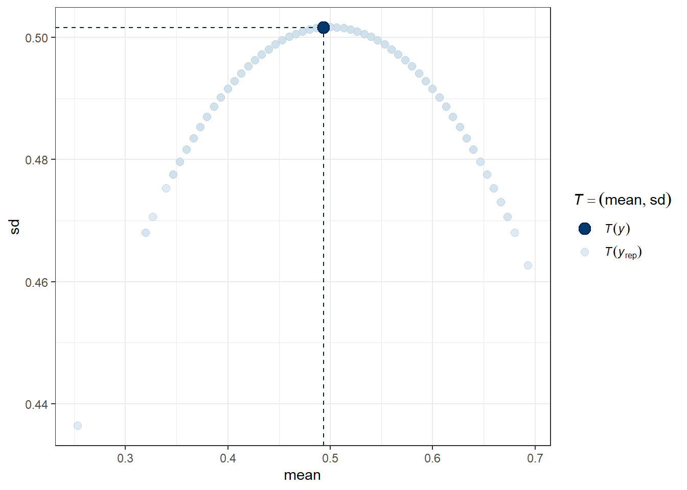
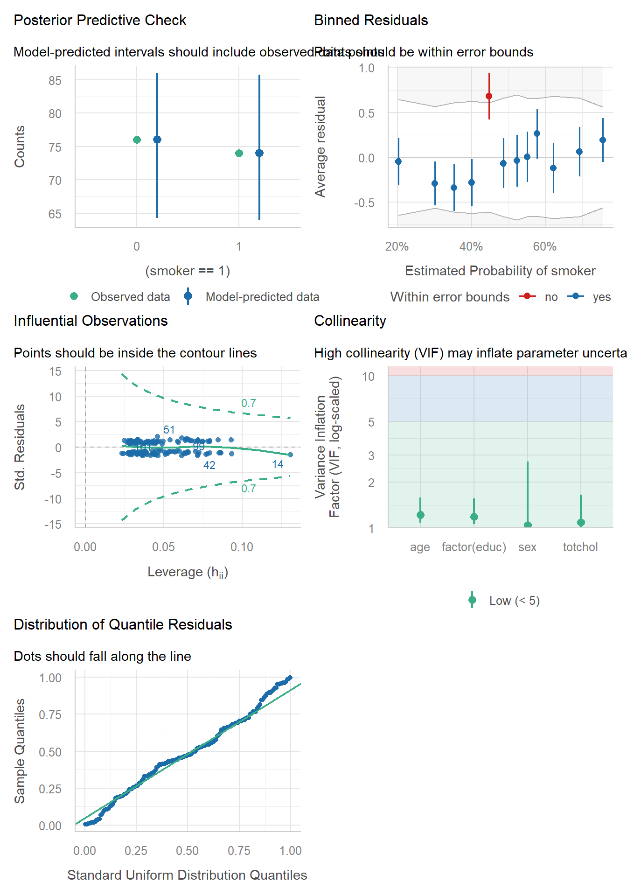
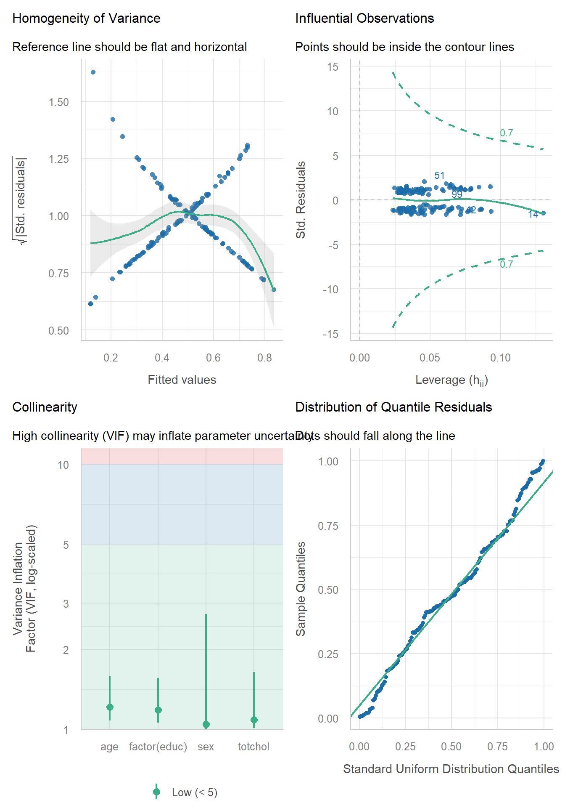

knitr::opts_chunk$set(comment = NA)
library(broom)
library(broom.mixed)
library(gt)
library(janitor)
library(mosaic)
library(bayestestR)
library(insight)
library(rstanarm)
library(conflicted)
library(easystats)
library(tidyverse)
conflicts_prefer(dplyr::select, dplyr::filter,
base::mean, base::range, base::max)
theme_set(theme_bw())34 NEW!! Bayes and a Logistic Model
Almost all of this material is based on
- https://mc-stan.org/rstanarm/articles/binomial.html and
- https://easystats.github.io/bayestestR/articles/bayestestR.html and
- https://easystats.github.io/bayestestR/articles/example1.html and
- https://easystats.github.io/bayestestR/articles/example2.html#logistic-model
There’s not a lot that is truly original here. That’s a summer project.
34.1 R Setup Used Here
34.2 Return to the smalldat Example
Consider the smalldat.csv data we discussed initially Chapter 22. The data includes 150 observations on 6 variables, and our goal here is to predict smoker given four predictors (totchol, age, sex and educ.)
smalldat <- read_csv("data/smalldat.csv", show_col_types = FALSE)| Variable | Description |
|---|---|
| subject | Subject identification code |
| smoker | 1 = current smoker, 0 = not current smoker |
| totchol | total cholesterol, in mg/dl |
| age | age in years |
| sex | subject’s sex (M or F) |
| educ | subject’s educational attainment (4 levels) |
The educ levels are: 1_Low, 2_Middle, 3_High and 4_VHigh, which stands for Very High
34.3 The Distribution of Smoking Status
Across the 150 observations in the smalldat data, we have 74 smokers.
smalldat |> tabyl(smoker) |> adorn_pct_formatting() |> adorn_totals() smoker n percent
0 76 50.7%
1 74 49.3%
Total 150 -34.4 Fitting a Logistic Regression Model with glm()
m1 <- glm((smoker == 1) ~ age + sex + totchol + factor(educ),
data = smalldat, family = binomial())
glance(m1) |> select(nobs, df.residual, AIC, BIC, logLik, deviance, null.deviance) |>
gt() |> fmt_number(AIC:null.deviance, decimals = 2)| nobs | df.residual | AIC | BIC | logLik | deviance | null.deviance |
|---|---|---|---|---|---|---|
| 150 | 143 | 206.46 | 227.54 | −96.23 | 192.46 | 207.92 |
## raw coefficients
tidy(m1, conf.int = TRUE, conf.level = 0.95) |>
gt() |> fmt_number(decimals = 3)| term | estimate | std.error | statistic | p.value | conf.low | conf.high |
|---|---|---|---|---|---|---|
| (Intercept) | 2.519 | 1.382 | 1.822 | 0.068 | −0.154 | 5.295 |
| age | −0.062 | 0.022 | −2.818 | 0.005 | −0.107 | −0.020 |
| sexM | 0.579 | 0.357 | 1.624 | 0.104 | −0.117 | 1.286 |
| totchol | 0.003 | 0.005 | 0.555 | 0.579 | −0.006 | 0.012 |
| factor(educ)2_Middle | −0.402 | 0.432 | −0.930 | 0.353 | −1.262 | 0.440 |
| factor(educ)3_High | −0.320 | 0.520 | −0.616 | 0.538 | −1.355 | 0.698 |
| factor(educ)4_VHigh | −1.113 | 0.574 | −1.939 | 0.053 | −2.289 | −0.017 |
## with exponentiated coefficients
tidy(m1, exponentiate = TRUE, conf.int = TRUE, conf.level = 0.95) |>
gt() |> fmt_number(decimals = 3)| term | estimate | std.error | statistic | p.value | conf.low | conf.high |
|---|---|---|---|---|---|---|
| (Intercept) | 12.411 | 1.382 | 1.822 | 0.068 | 0.857 | 199.349 |
| age | 0.940 | 0.022 | −2.818 | 0.005 | 0.899 | 0.980 |
| sexM | 1.784 | 0.357 | 1.624 | 0.104 | 0.890 | 3.620 |
| totchol | 1.003 | 0.005 | 0.555 | 0.579 | 0.994 | 1.012 |
| factor(educ)2_Middle | 0.669 | 0.432 | −0.930 | 0.353 | 0.283 | 1.553 |
| factor(educ)3_High | 0.726 | 0.520 | −0.616 | 0.538 | 0.258 | 2.011 |
| factor(educ)4_VHigh | 0.329 | 0.574 | −1.939 | 0.053 | 0.101 | 0.983 |
model_parameters(m1, exponentiate = TRUE, ci = 0.90)Parameter | Odds Ratio | SE | 90% CI | z | p
------------------------------------------------------------------------
(Intercept) | 12.41 | 17.15 | [1.31, 126.18] | 1.82 | 0.068
age | 0.94 | 0.02 | [0.91, 0.97] | -2.82 | 0.005
sex [M] | 1.78 | 0.64 | [1.00, 3.23] | 1.62 | 0.104
totchol | 1.00 | 4.64e-03 | [0.99, 1.01] | 0.55 | 0.579
educ [2_Middle] | 0.67 | 0.29 | [0.33, 1.36] | -0.93 | 0.353
educ [3_High] | 0.73 | 0.38 | [0.31, 1.71] | -0.62 | 0.538
educ [4_VHigh] | 0.33 | 0.19 | [0.12, 0.83] | -1.94 | 0.053
Uncertainty intervals (profile-likelihood) and p-values (two-tailed)
computed using a Wald z-distribution approximation.model_performance(m1)# Indices of model performance
AIC | AICc | BIC | Tjur's R2 | RMSE | Sigma | Log_loss | Score_log
------------------------------------------------------------------------
206.5 | 207.3 | 227.5 | 0.099 | 0.475 | 1 | 0.642 | -52.001
AIC | Score_spherical | PCP
-------------------------------
206.5 | 0.009 | 0.54934.5 Fitting a Bayesian Logistic Regression
Can we fit a model for the same data using a Bayesian approach?
Yes, we can, for instance using the stan_glm() function from the rstanarm package.
set.seed(43234231) # best to set a random seed first
m2 <- stan_glm((smoker == 1) ~ age + sex + totchol + factor(educ),
data = smalldat, refresh = 0, family = binomial())Here the refresh = 0 parameter stops the machine from printing out each of the updates it does while sampling, which is not generally something I need to look at. Here’s what’s placed in the m2 object:
m2stan_glm
family: binomial [logit]
formula: (smoker == 1) ~ age + sex + totchol + factor(educ)
observations: 150
predictors: 7
------
Median MAD_SD
(Intercept) 2.6 1.5
age -0.1 0.0
sexM 0.6 0.4
totchol 0.0 0.0
factor(educ)2_Middle -0.4 0.4
factor(educ)3_High -0.3 0.5
factor(educ)4_VHigh -1.2 0.6
------
* For help interpreting the printed output see ?print.stanreg
* For info on the priors used see ?prior_summary.stanreg- The first few lines specify the fitting process.
- Next, for each coefficient, we find the median value from the posterior distribution, and the MAD_SD value, which is an indicator of variation derived from the estimated posterior distribution of the parameters, and is used as a standard error in what follows.
- Finally, we see the estimated root mean squared error (residual standard deviation)
sigma, again estimated with the median of thesigmavalues in the posterior distribution.
Using the summary() function provides some additional information about the parameter estimates, but mostly some convergence diagnostics for the Markov Chain Monte Carlo procedure that the rstanarm package used to build the estimates.
summary(m2)
Model Info:
function: stan_glm
family: binomial [logit]
formula: (smoker == 1) ~ age + sex + totchol + factor(educ)
algorithm: sampling
sample: 4000 (posterior sample size)
priors: see help('prior_summary')
observations: 150
predictors: 7
Estimates:
mean sd 10% 50% 90%
(Intercept) 2.6 1.5 0.8 2.6 4.5
age -0.1 0.0 -0.1 -0.1 0.0
sexM 0.6 0.4 0.1 0.6 1.1
totchol 0.0 0.0 0.0 0.0 0.0
factor(educ)2_Middle -0.4 0.4 -1.0 -0.4 0.1
factor(educ)3_High -0.3 0.5 -1.0 -0.3 0.4
factor(educ)4_VHigh -1.2 0.6 -2.0 -1.2 -0.4
Fit Diagnostics:
mean sd 10% 50% 90%
mean_PPD 0.5 0.1 0.4 0.5 0.6
The mean_ppd is the sample average posterior predictive distribution of the outcome variable (for details see help('summary.stanreg')).
MCMC diagnostics
mcse Rhat n_eff
(Intercept) 0.0 1.0 5691
age 0.0 1.0 3277
sexM 0.0 1.0 5208
totchol 0.0 1.0 4007
factor(educ)2_Middle 0.0 1.0 3100
factor(educ)3_High 0.0 1.0 3597
factor(educ)4_VHigh 0.0 1.0 3881
mean_PPD 0.0 1.0 3755
log-posterior 0.0 1.0 1793
For each parameter, mcse is Monte Carlo standard error, n_eff is a crude measure of effective sample size, and Rhat is the potential scale reduction factor on split chains (at convergence Rhat=1).34.5.1 Parameters and Performance
model_parameters(m2, exponentiate = TRUE, ci = 0.90)Parameter | Median | 90% CI | pd | Rhat | ESS | Prior
-------------------------------------------------------------------------------------------
(Intercept) | 13.61 | [1.36, 161.05] | 96.83% | 0.999 | 5691 | Normal (0 +- 2.50)
age | 0.94 | [0.90, 0.97] | 99.80% | 0.999 | 3277 | Normal (0 +- 0.28)
sexM | 1.83 | [1.00, 3.33] | 94.88% | 1.000 | 5208 | Normal (0 +- 5.05)
totchol | 1.00 | [0.99, 1.01] | 71.88% | 1.000 | 4007 | Normal (0 +- 0.06)
factor(educ)2_Middle | 0.66 | [0.32, 1.34] | 83.67% | 1.000 | 3100 | Normal (0 +- 5.44)
factor(educ)3_High | 0.72 | [0.29, 1.80] | 72.40% | 1.000 | 3597 | Normal (0 +- 7.04)
factor(educ)4_VHigh | 0.31 | [0.11, 0.80] | 97.70% | 1.000 | 3881 | Normal (0 +- 7.33)
Uncertainty intervals (equal-tailed) computed using a MCMC distribution
approximation.model_performance(m2)# Indices of model performance
ELPD | ELPD_SE | LOOIC | LOOIC_SE | WAIC | R2 | RMSE | Sigma
---------------------------------------------------------------------
-104.058 | 4.282 | 208.1 | 8.564 | 208.0 | 0.131 | 0.475 | 1
ELPD | Log_loss | Score_log | Score_spherical
-------------------------------------------------
-104.058 | 0.642 | -50.828 | 0.00934.5.2 Extracting the Posterior
Let’s extract the coefficients of our model, using the get_parameters() function from the insight package:
posteriors <- get_parameters(m2)
head(posteriors) (Intercept) age sexM totchol factor(educ)2_Middle
1 4.016067 -0.07540620 0.1397881 -0.0001487149 -0.7074614
2 4.723329 -0.06750631 0.3113829 -0.0062258920 -0.3945980
3 3.058703 -0.05155403 0.6788520 -0.0044479167 0.3186364
4 2.456194 -0.02381059 0.8612615 -0.0035917297 -0.8959018
5 4.182175 -0.08553137 0.4827377 -0.0005896587 0.2710336
6 3.088430 -0.07019592 0.8944691 0.0016432160 -0.6836971
factor(educ)3_High factor(educ)4_VHigh
1 -0.5300172 -1.3158221
2 0.2797278 -0.7244426
3 0.3331781 -1.0517935
4 -0.5022896 -0.8820488
5 0.1852210 -1.1152544
6 -0.6119858 -1.0987494In all, we have 4000 observations of this posterior distribution:
nrow(posteriors)[1] 4000Let’s visualize the posterior distribution of our parameter for age.
ggplot(posteriors, aes(x = age)) + geom_density(fill = "dodgerblue")
This distribution describes the probability (on the vertical axis) of various age effects (shown on the horizontal axis). Most of the distribution is between -0.10 and -0.02, with the peak being around -0.06.
Remember that our m1 fit with glm() had an estimated \(\beta\) for age of -0.014.
Here’s the mean and median of the age effect, across our 4000 simulations from the posterior distribution.
mean(posteriors$age)[1] -0.06553402median(posteriors$age)[1] -0.0653023And here are the results after exponentiation, so that the estimates describe odds ratios:
mean(exp(posteriors$age))[1] 0.9368041median(exp(posteriors$age))[1] 0.9367842Again, these are somewhat close to what we obtained from least squares estimation.
Another option is to take the mode (peak) of the posterior distribution, and this is called the maximum a posteriori (MAP) estimate:
map_estimate(posteriors$age)MAP Estimate
Parameter | MAP_Estimate
------------------------
x | -0.06map_estimate(exp(posteriors$age)) # on odds ratio scaleMAP Estimate
Parameter | MAP_Estimate
------------------------
x | 0.94Adding these estimates to our plot, we can see that they are quite close:
ggplot(posteriors, aes(x = age)) +
geom_density(fill = "dodgerblue") +
# The mean in yellow
geom_vline(xintercept = mean(posteriors$age), color = "yellow", linewidth = 1) +
# The median in red
geom_vline(xintercept = median(posteriors$age), color = "red", linewidth = 1) +
# The MAP in purple
geom_vline(xintercept = as.numeric(map_estimate(posteriors$age)), color = "purple", linewidth = 1)
34.5.3 Describing Uncertainty
We might describe the range of estimates for the age effect.
range(posteriors$age)[1] -0.14491202 0.01169277Instead of showing the whole range, we usually compute the highest density interval at some percentage level, for instance a 95% credible interval which shows the range containing the 95% most probable effect values.
hdi(posteriors$age, ci = 0.95)95% HDI: [-0.11, -0.02]So we conclude that the age effect has a 95% chance of falling within the [-0.11, -0.02] range. We can also exponentiate here, so as to provide the result in terms of an odds ratio.
hdi(exp(posteriors$age), ci = 0.95)95% HDI: [0.89, 0.98]34.5.4 Visualizing the Coefficients and Credible Intervals
Here is a plot of the coefficients and parameters estimated in m2, along with credible intervals for their values. The inner interval (shaded region) here uses the default choice of 50%, and the outer interval (lines) uses a non-default choice of 95% (90% is the default choice here, as it turns out.) The point estimate shown here is the median of the posterior distribution, which is the default.
plot(m2, prob = 0.5, prob_outer = 0.95)
34.6 Summarizing the Posterior Distribution
A more detailed set of summaries for the posterior distribution can be obtained from the describe_posterior() function from the bayestestR package.
A brief tutorial on what is shown here is available at https://easystats.github.io/bayestestR/articles/bayestestR.html and https://easystats.github.io/bayestestR/articles/example1.html and this is the source for much of what I’ve built in this little chapter.
describe_posterior(posteriors, test = c("pd", "ROPE")) |> print_md(decimals = 3)| Parameter | Median | 95% CI | pd | ROPE | % in ROPE |
|---|---|---|---|---|---|
| (Intercept) | 2.61 | [-0.15, 5.56] | 96.83% | [-0.10, 0.10] | 1.05% |
| age | -0.07 | [-0.11, -0.02] | 99.80% | [-0.10, 0.10] | 96.13% |
| sexM | 0.60 | [-0.12, 1.32] | 94.88% | [-0.10, 0.10] | 6.26% |
| totchol | 2.66e-03 | [-0.01, 0.01] | 71.88% | [-0.10, 0.10] | 100% |
| factor(educ)2_Middle | -0.42 | [-1.27, 0.44] | 83.67% | [-0.10, 0.10] | 12.37% |
| factor(educ)3_High | -0.33 | [-1.41, 0.73] | 72.40% | [-0.10, 0.10] | 12.89% |
| factor(educ)4_VHigh | -1.16 | [-2.40, -0.03] | 97.70% | [-0.10, 0.10] | 0.76% |
Let’s walk through all of this output.
34.6.1 Summarizing the Parameter values
For each parameter, we have:
- its estimated median across the posterior distribution
- its 95% credible interval (highest density interval of values within the posterior distribution)
as we’ve previously discussed.
34.6.2 Probability of Direction (pd) estimates.
The pd estimate helps us understand whether each effect is positive or negative. For instance, regarding age, we see the proportion of the posterior that is in the direction of the median effect (negative), no matter what the “size” of the effect is, will be as follows.
n_negative <- posteriors |> filter(age < 0) |> nrow()
100 * n_negative / nrow(posteriors)[1] 99.8So we see that the effect of age is negative with a probability of 99.85%, and this is called the probability of direction and abbreviated pd.
We can also calculate this with
p_direction(posteriors$age)Probability of Direction
Parameter | pd
------------------
Posterior | 99.80%34.6.3 The ROPE estimates
Testing whether this distribution is different from 0 doesn’t make sense, as 0 is a single value (and the probability that any distribution is different from a single value is infinite). However, one way to assess significance could be to define an area around 0, which will consider as practically equivalent to zero (i.e., absence of, or a negligible, effect). This is called the Region of Practical Equivalence (ROPE).
The default (semi-objective) way of defining the ROPE is to use (-0.1, 0.1) in this context. This is sometimes considered a “negligible” effect size.
rope_range(posteriors)[1] -0.1 0.1So we then compute the percentage in ROPE as the percentage of the posterior distribution that falls within this ROPE range. When most of the posterior distribution does not overlap with ROPE, we might conclude that the effect is important enough to be noted.
In our case, 100% of the age effects are in the ROPE, so that’s not really evidence of an important effect.
For sex, though, only 35% of the effects are in the ROPE, so that’s indicative of a somewhat more substantial effect, but we’d only get really excited if a much smaller fraction, say 1%, 5% or maybe 10% were in the ROPE.
34.6.4 Summarizing the Coefficients as Odds Ratios
broom.mixed::tidy(m2, exponentiate = TRUE,
conf.int = TRUE, conf.level = 0.95) |>
gt() |> fmt_number(decimals = 3)| term | estimate | std.error | conf.low | conf.high |
|---|---|---|---|---|
| (Intercept) | 13.607 | 19.888 | 0.858 | 259.727 |
| age | 0.937 | 0.021 | 0.896 | 0.979 |
| sexM | 1.827 | 0.661 | 0.889 | 3.732 |
| totchol | 1.003 | 0.005 | 0.993 | 1.012 |
| factor(educ)2_Middle | 0.655 | 0.282 | 0.280 | 1.560 |
| factor(educ)3_High | 0.716 | 0.392 | 0.244 | 2.072 |
| factor(educ)4_VHigh | 0.313 | 0.185 | 0.091 | 0.971 |
34.7 Summarizing the Priors Used
From the bayestestR package, we also have the describe_prior() and print_md() functions to get the following summary of the priors we have assumed. Since we didn’t specify anything about the priors in fitting model m2, we are looking at the default choices, which are weakly informative priors following Normal distributions. Details on the default prior choices can be found at https://mc-stan.org/rstanarm/articles/priors.html.
describe_prior(m2) |> print_md(decimals = 3)| Parameter | Prior_Distribution | Prior_Location | Prior_Scale |
|---|---|---|---|
| (Intercept) | normal | 0 | 2.50 |
| age | normal | 0 | 0.28 |
| sexM | normal | 0 | 5.05 |
| totchol | normal | 0 | 0.06 |
| factor(educ)2_Middle | normal | 0 | 5.44 |
| factor(educ)3_High | normal | 0 | 7.04 |
| factor(educ)4_VHigh | normal | 0 | 7.33 |
34.8 Graphical Posterior Predictive Checks
For more on these checks, visit https://mc-stan.org/rstanarm/articles/continuous.html#the-posterior-predictive-distribution-1, for example.
Here’s the first plot which compares the density function of the observed outcome \(y\) (totchol) to several of the simulated data sets \(y_{rep}\) from the posterior predictive distribution using the same predictor values as were used to fit the model.
pp_check(m2, nreps = 5)
The idea is that if the model is a good fit to the data we should be able to generate data \(y_{rep}\) from the posterior predictive distribution that looks a lot like the observed data \(y\). That is, given \(y\), the \(y_{rep}\) we generate should look plausible. We’d worry a bit if this plot showed histograms that were wildly different from one another.
Another useful plot (shown below) made using pp_check shows the distribution of a test quantity \(T(y_{rep})\) compared to \(T(y)\), the value of the quantity in the observed data. I like this scatterplot version which allows us to look at where the simulations’ mean and standard deviation fall compared to what the observed totchol values show us.
pp_check(m2, plotfun = "stat_2d", stat = c("mean", "sd"))Note: in most cases the default test statistic 'mean' is too weak to detect anything of interest.
We can see that the cloud of simulated means and standard deviations has the observed statistics near its center, although perhaps the standard deviations are a bit higher than we might like to see, typically. Ideally, the dot would be right in the center of this cloud of simulated results.
34.9 check_model() results for models m1 and m2
For our glm() model m1:
check_model(m1)
For our Bayesian model m2:
check_model(m2)